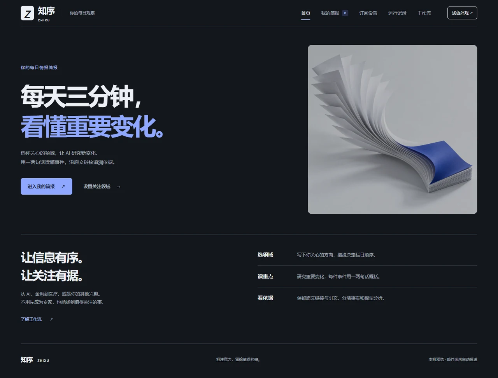

AI 研究工作流 / 个性化信息产品
知序｜三分钟领域简报
为关注多个领域的读者解决新闻分散、重复信息多、重要变化难以快速判断的问题，把研究、证据与阅读编排连成可追溯的工作流。

业务问题
读者每天需要在多个信息源之间切换，但新闻数量不等于重要变化。同一事件可能被反复转载，摘要又容易丢失出处；即使收集到了内容，也还需要判断新意、筛除噪声，并控制整份简报的阅读负担。
系统架构
左右滑动查看图中细节，也可打开完整图。
我的做法
我从“关注什么、什么值得读、依据在哪里、这次有什么新变化”出发，组织领域配置、模型研究、原文约束、事件记忆和阅读预算，让用户只需选择领域，就能手动生成有来源、可检查的短简报与邮件样稿。
工作流程
从关注领域到可读简报
- 配置领域。支持任意兴趣主题、排除词和栏目排序；系统匹配领域编辑准则，用户无需预先填写公司名单或定义新闻重要性门槛。
- 发现与补查。DeepSeek 规划中英文查询，结合公开 RSS 与 Bing News 发现候选事件并判断检索缺口；可选 Tavily 优先检索，失败或没有候选的查询单独接替到 Bing。
- 读取与约束。取得公开原文，检查 URL、发布日期、正文和结构化输出，逐字核对模型引用。再比较已采用的事实，区分重复信息与新的进展。
- 编排与观察。按用户栏目顺序，在整封共享阅读预算内生成一两句摘要和原文链接；提供 HTML 邮件样稿下载、采用与抽检，以及来源健康、耗时和模型用量记录。
我的个人贡献
我负责产品需求与工作流梳理，将领域、文章、事件、运行和已采用简报组织为数据链路，并围绕来源接替、证据检查、跨期去重和阅读体验推动实现与迭代，完成产品首页、研究工作台及 GitHub、Render 演示部署。
设计取舍
AI 研究与提示词设计
将检索规划与原文分析拆成两个阶段：前者依据领域准则筛选具体变化并提出补查，后者输出受原文约束的摘要、事实和引文。程序检查结构与引用，保留事实、系统分析和不确定性的区别。
搜索片段只作线索，不替代原文；引文逐字存在也不代表独立核实了新闻事实。证据不足、解析失败或校验不通过的候选不会进入邮件样稿。
采用之后，才更新记忆
生成、预览和下载不会改变事件记忆。只有人工点击“采用本期”，合格事件才进入后续增量比较，避免把看过的测试结果误当成已认可的简报；同一事件的新动作、新结果或新披露仍可作为后续进展保留。
阅读预算与技术选择
所有栏目共享约三分钟的文字量预算，而不是每个栏目各自凑满。重要事件优先，保留用户栏目顺序；没有合格新信息时留空，并区分无结果与来源故障。
项目使用 Node.js、原生 HTML/CSS/JavaScript、Cheerio 与 Undici。模型密钥仅留服务端，来源请求保留超时、大小限制和逐跳域名检查；运行档案使用 JSON，适合当前单进程演示。
成果与验证边界
已形成可访问的产品首页与研究工作台，串起领域配置、真实来源检索、原文约束、增量判断、邮件样稿和运行观察。2026 年 10 月 4 日的一次本机两轮验证中，首轮从 119 条唯一候选中编入 8 件事件；采用后第二轮仅新增 1 件，验证了流程执行与跨期去重。
当前需手动生成，尚未接入邮箱验证、云端定时与实际邮件投递。公网真实生成受管理口令与模型配置保护；演示档案在 Free 服务重启后可能丢失。三分钟是文字量估算，上述样本不代表稳定覆盖率、新闻真实性或真实用户提效。